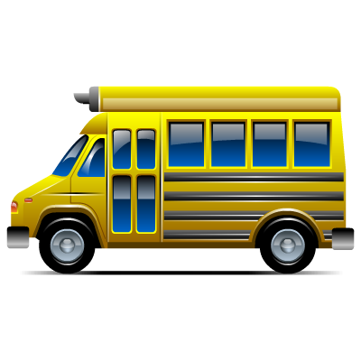

Every single person has a place they call home.
Although as the saying goes, home is not a place, its a feeling.
Wherever that feeling is, its got to be in a place. Many people
struggle to reach their destinations largely because of the long
queues at different bus stations. And in this period of corona virus,
that is very dangerous as the SOPs are not practiced. With the bus ticket
reserve system, we give you the power to book a sit and buy a ticket from
the comfort of your sofa at home or wherever you are.
We've acquired contracts with various bus companies so as to bring the
very best and affordable services to you. The bus app also enables customers to rate their
experiences with various bus companies and provide feedback which will later be
used to better the services.
To make the world a better place, you've got to take a look
at yourself and whats around, and make a change. Our change is to make your travels
more comfortable and time saving. Download the app now and get started!!!!
Here we go!!
Download Now
